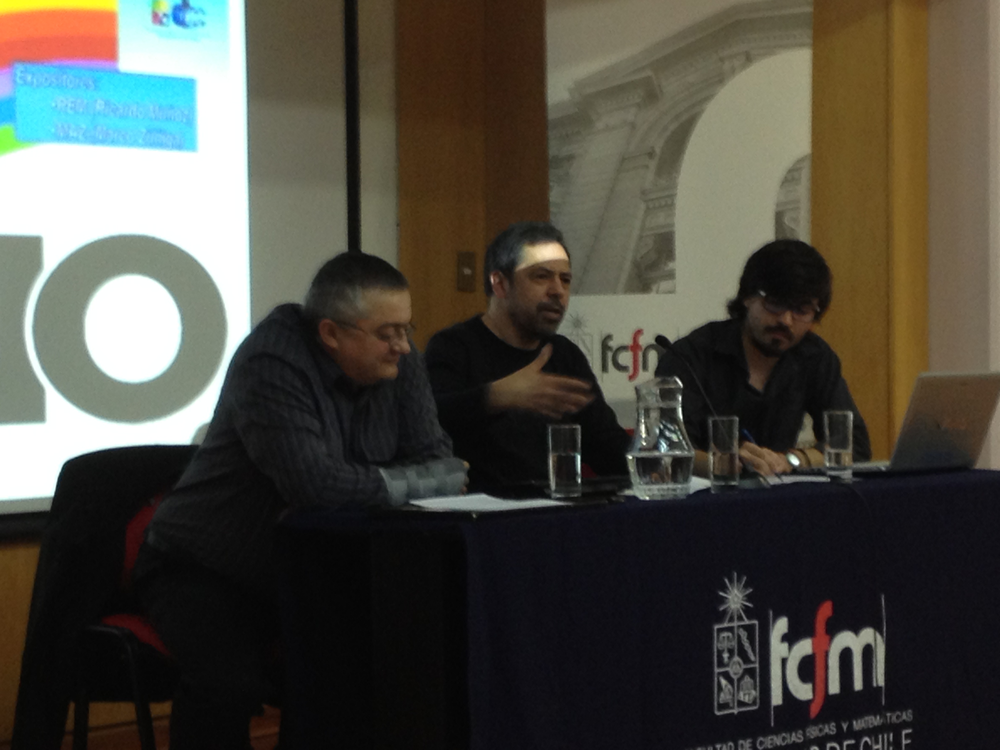

Hackers del 5 de octubre - 25 años
Es una cosa curiosa pero, resulta que ahora todos los chilenos que vivieron en aquella época votaron por el No, así que no se que gracia tiene esta historia que publiqué hace unos años atrás, pero por lo menos el año pasado fue recordada por los alumnos del departamento de computación de la Universidad de Chile, como evidencia esta foto de aquel evento, donde vemos a los dos protagonistas de la historia que viene más abajo, MAZ y REM:

Ahora se cumplen 25 años del triunfo del No y con esto el fin de la dictadura de Pinochet, así que recordar esta historia tiene un significado especial, por el simple expediente de ser 25 un múltiplo de cinco, pero no me parece justo que todos recuerden como votaron por el No, y esta historia no sea destacada, así que acá se las vuelvo a dejar, supongo que cuando lleguen los 30 años, y los dinosaurios se hayan extinguido empezarán a invitar a los que eran jóvenes en esa época y se entregaron, con la pasión de la temprana edad, a la tarea de recuperar nuestra democracia.
Los Hackers del 5 de Octubre
Era el 5 de octubre de 1988,
¡hace veinte veinticinco años!, miles de jóvenes de mi edad participábamos de una
manera u otra en ese gran momento histórico, algunos, como yo, sólo
asistiendo a las urnas votando NO.
Pero en esos tiempos también había activismo tecnológico. Esta es la historia de un grupo de computines, luchando con lo que sabían hacer, con computadores y tecnología, para asegurar que ese plebiscito no fuera manipulado por la dictadura. La historia contada por MAZ y REM, dos hackers, luchando por el retorno de la democracia, dos de mis mejores amigos.
Es la mañana del 5 de octubre:
MAZ: Llevamos 30 horas sin dormir ... Ya no siento la boca por la hediondez a puchos y café ... ¿Cómo estarán mis viejos y mis hermanas? ... La última máquina de FAX la terminamos de instalar anoche en el living del departamento de una persona en el centro, con su familia en pleno y coordinando con el portero del edificio, que afortunadamente es de nuestro lado, asegurándonos de que deje entrar a los planilleros en moto y bicicleta que traerán los resultados de las mesas desde los centros de votación, para mandar los resultados a los centros de acopio ... Teníamos un error en el programa de conteo del recuento de mesas que terminamos de corregir anoche ... Me duele la cabeza ... Afortunadamente la red local ha funcionado bien ...
Tenemos que tener cuidado con patear el coaxial de la red ... No hay tiempo para hacer respaldos, pero por si acaso se llevaron un juego de diskettes de 5 1/4" con los fuentes y las bases de datos ...
Nunca se sabe ... ¿A qué hora me toca ir a votar? ¿Quién me va a llevar? ... Tenemos problemas con los operadores de los FAX ... Puta madre ... Si es re fácil ... Es meter el papel, discar el número y apretar el botón verde ... ¿Por qué cresta no anda eso? ... Los módems han andado bien, menos mal, pero hay que usarlos poco porque nos cacharon que estábamos traficando datos y el otro día nos echaron abajo unas líneas telefónicas ... Pero eran las de prueba ... Los números oficiales los estrenamos recién ahora ...
Hay que usar los módems lo justo y necesario ... Pero podemos mandar losarchivos a los puntos remotos y es lo que importa ... Están llegando las aperturas de mesas ... Se están constituyendo temprano ... Avisen al comando ... Concepción anda lento, que manden más apoderados ... ¿O es un problema de envío de información? Tuvieron que cambiar a ultima hora un centro de acopio porque los vecinos del frente cacharon y los sapearon ...
¿Qué pasa? ¿Son las mesas que no se constituyen o estamos con problemas en el flujo de datos? ... Hay que correr los procesos de conteo de aperturas ... En la tele están dando monos animados ... ¿Han sabido algo del Comando Central? Estamos picados porque ellos tienen Unix y plata, y nosotros simples PCs y aplicaciones en Clipper, pero no importa ...
Nuestros protagonistas son miembros del grupo de respaldo para el conteo de la votación, un grupo secreto creado ante la eventualidad que el grupo central, el que conoce todo el mundo, sea anulado de alguna forma por el gobierno.
De acuerdo al testimonio de REM:
Para la gente que ha leído respecto del plebiscito habían dos líneas de recuento, la línea N y la línea O, nosotros no existíamos, éramos el respaldo por si los milicos decidían desconocer los resultados. Nuestra única defensa era pasar desapercibidos, éramos los clandestinos por lo que muy poca gente podía saber que existíamos y mucho menos donde funcionábamos, de hecho sólo a última hora supimos donde iba a estar el centro de cómputos nuestro. Allí pasamos varias e intensas horas aquel 5 y 6 de octubre. Allí pasé encerrado mi cumpleaños.
Uno de los recuerdos más claros que tengo fue cuando empezamos a recibir problemas de los centros de acopio. Había mesas que no podían ser ingresadas porque el sistema las rechazaba. Nuestro sistema se basaba en centros de acopio con un sistema hecho en clipper que eran los que nos enviaban la información, no había forma de cambiar los programas, había que buscar una solución rápidamente pero antes había que detectar el problema. Luego de un rato nos dimos cuenta que las mesas de hombres y de mujeres estaban cambiadas y nos comunicamos con el comando central que eran los que habían generado las bases que estábamos usando, ellos también tenían el error y ya habían detectado el problema, lo habían solucionado y se habían olvidado de nosotros. Para ellos era fácil, su sistema era una máquina con Unix en la que centralizaban todo, nosotros no podíamos por lo que tuvimos que buscar una solución alternativa que encontramos después de unas buenas discusiones. Te acuerdas qué buenos éramos para pelear entre los dos cuando discutíamos por algún desarrollo, el resto siempre nos miraba con cara de aquí quedó la cagá y nosotros finalmente llegábamos a un acuerdo y seguíamos tan amigos como siempre.
Durante la mañana los llevan a votar, por turnos, y siempre acompañados por alguien, deben votar lo màs rápido posible y volver, poco tiempo para reflexionar sobre lo importante que es ese evento, todos los que votamos por primera vez esa vez sentimos lo mismo que cuenta MAZ:
MAZ: ... Tengo 22 años y es la primera votación pública en la cual voy a participar ... Ahora me doy cuenta que nunca he votado en la vida pública, aunque he tenido la suerte de votar muchas veces en la Universidad ... Pero esto es distinto ... No es lo mismo elegir un Vocal o un Presidente de Centro de Alumnos que esta fila de verdad, donde comparto con decenas de personas que son mis vecinos ... Nunca podré conocerlos a todos ... Tengo susto de romper mi voto y equivocarme ... Una rayita, sólo una rayita ... La franja lo decía y lo repetía ... Cuide su voto ... Sólo una rayita ... ¿Cuántos votos se van a perder por personas que después de tanto tiempo, van a tomar su voto y expresar lo que no han podido decir ni hacer durante tanto tiempo? ... Una rayita ... Nada más que eso ... ¿Voté bien? ¿Estoy seguro?...
Hay que volver:
MAZ: .. Lo que más me impresiona es el silencio de Santiago ... Muy distinto de los días anteriores, donde tenía que pasar por el lado de las marchas de uno y otro lado sin poder ponerme una chapita por el NO...
Volvimos del centro después de arreglar el FAX ... Era una cosa menor pero la vimos peluda por el viaje ... Además teníamos que andar rápido en el auto ... No había gente en las calles y estaban comenzando a cerrar el centro ... Tuvimos miedo, harto miedo ... Volvimos muy rápido a nuestro lugar ... Nunca he sentido tan acogedora una sala de reuniones de una empresa ... Comienza a oscurecer, pero mientras muchos empiezan a escuchar en sus casas las noticias y en la tele se comienzan a dar los resultados parciales, para nosotros la pega recién empieza ..
. Hemos recibido ya resultados de muchas partes .… Nuestros primeros cómputos dan como ganador al SI, y la desazón nos empieza a invadir ... Pero los viejos zorros nos dicen ... No se engañen ... Las primeras mesas son las más conservadoras por muchas razones que no quisimos escuchar ... Los números nos decían otras cosas y la prioridad era recibir, procesar, contar, sumar ... Y enviar los resultados que tuviéramos ... No había tiempo para pensar ... Solo ver números y procesar archivos ... Pero comenzaron a llegar nuevos resultados ... En muchas partes el NO empezaba a subir y a ganar ... La tendencia se revertía ... Vimos a Cardemil dar el primer cómputo, y en su discurso indicaba como “tendencia irrevocable” la ganancia del SI con una cantidad ridícula de mesas ... “Nos van a borrar” pienso para mí, y sé que varios en mi entorno sienten lo mismo, pero tenemos que seguir ... Nosotros a las 19:30 teníamos mas del 25% de los cómputos ... Y los números nos daban otros resultados .
Y la tensión empieza a crecer
MAZ: Pensábamos que iba a ser avasallador el triunfo del NO ... Yo esperaba sobre un 70% ... Pero cuando empezamos a recibir resultados y con suerte subíamos sobre el 50%, ganábamos ... pe ro en forma tibia. ¿En qué fallamos? ¿Qué cosa no vimos? ¿Por qué no se expresa en nuestro país lo que durante muchos años hicimos y denunciamos? ¿Qué hemos hecho mal?... No importa ... Hay que procesar ... Hay que seguir ... Y hay que enviar lo que tengamos para que otros lo puedan analizar y perpetuar ... “Cabros, cerraron el Centro ... Hay una alta probabilidad de que vuelen el Comando Central al lado del Diego Portales ... Sólo lo protege la cobertura internacional de prensa” ... Las otras líneas son más débiles ... “Prepárense porque podemos ser la única alternativa que quede” ..
REM estaba de cumpleaños ese mismo día, al final, la amistad es más importante que cualquier revolución política, no me equivoco, lo piensan también estos jóvenes:
REM: Lo otro que tengo presente es que durante ese día y esa noche no había tiempo para nada más que para trabajar. Había que sacara informe tras informe y enviar todos nuestros recuentos a “la piscina”. Qué cresta era la famosa piscina? Nunca he tenido 100% de certeza, unos dicen que era una embajada, otros que era la iglesia, el hecho es que era “algo” a donde fueron a parar todos nuestros resultados. Bueno, el asunto es que en algún momento nos detuviste a todos y les contaste que yo estaba de cumpleaños y me cantaron y hubo abrazos y mucha emoción y... y todo el mundo volvió a lo suyo... todos, incluso yo estábamos en otra...
MAZ: ... Feliz Cumpleaños querido amigo ... Te cantamos cumpleaños feliz, pero en realidad estábamos más preocupados por nuestros archivos, por la tele y por la noche que avanzaba ... Hemos recordado ese cumpleaños todos estos años al calor de un trago, menos veces de las que quisiera, pero cada vez que escucho algo sobre el plebiscito del '88, mi principal recuerdo es el abrazo que nos dimos por tu cumpleaños ...
REM: Ese año mi cumpleaños prácticamente no lo celebré, de hecho no estuve con mi familia y estuve con muy pocos amigos, pero el regalo que recibí fue el mejor que pude haber recibido, tal vez no haya sido para mi, pero me lo apropié en el mismo instante en que supe que oficialmente habíamos ganado.
Así después de esa pequeña celebración, vino la vorágine de terminar de contar lo votos, y esperar el resultado:
MAZ..cerca de la 1, dieron otro recuento en la tele ... Cardemil empezó a leer los números ... Primero nos sorprendió que el porcentaje de mesas escrutadas era alto, muy alto ... Y se nos empezó a apretar el estomago ... Nos paramos todos frente al televisor, en silencio, apretados, casi sin movernos ... Cuando dio las cifras oficiales, no entendimos muy bien, porque no creíamos lo que estábamos escuchando ... Quizás acostumbrados a la mentira permanente, no estábamos preparados para escuchar una verdad ... Pero era cierto ... Oficialmente reconocían que habíamos ganado ... Por poco ... Quizás un punto o menos de lo que nosotros habíamos contado, pero poco importaba ... Empezamos a saltar frente al televisor y abrazarnos ... Alguien trajo un par de botellas de champaña con las cuales nos bañamos entre todos ... Y nos dimos un abrazo, mi amigo, uno grande, de esos para toda la vida ... Y comencé a llorar como cabro chico ... Ganamos, compadre, ganamos ... Y seguía llorando mientras nos seguíamos saludando, saltando ... Y llegó la instrucción: Paren todo, cierren el boliche, que nos vamos a celebrar, mierda ... Y eso hicimos. Recuerdo que llegamos a la Plaza Italia como a las 3 de la mañana ... Miles de personas ... Decenas de miles de personas ... El cuerpo ya no me daba, pero con el corazón caliente y una sonrisa permanente el cansancio no existe ... En auto, a pie, con banderas, challa, pitos, champaña ... Pero lo que más me impresionó ... Muchas sonrisas, todo el mundo sonreía ... Di cientos de abrazos a gente que no conocía ... Subía a los autos ... Flameé una bandera frente al Diego Portales con mucha fuerza ... Y nos fuimos al Comando, a encontrarnos con todos ... Que linda la foto de esa noche ... Mi copia esta guardada entre mis recuerdos preferidos ... Que linda esa foto compadre ... Después, me fui en la mañana a la Universidad ... Era una fiesta ... Y en la tarde, a Grecia ... De ahí, caminar unas cuadras hasta mi casa, saludar a mis padres ... Y dormir, dormir ...

Ese día varios celebramos, estábamos contentos, el fin de la dictadura,
la alegría había llegado.
Con el tiempo nos dimos cuenta de que no fue totalmente así, pero esa
esa es otra historia, los procesos históricos no son tan simples como a
la gente le gustaría, no es posible lograr un estado de felicidad
absoluta. Lo que importa, es lo que queda, en este caso la amistad, y el
ejemplo de que los jóvenes, aún los más techies, son capaces de grandes
cosas.